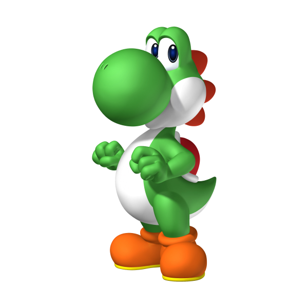

Dinosaure
Yoshi est un personnage fictif de jeu vidéo créé par le japonais Shigefumi Hino. Il apparaît dans les jeux vidéo édités par Nintendo
Loisirs :
- Boissons
- Légumes
- Desserts
Préférences :
- salade
- tomate
- oignons
Informations supplémentaires :
| Année | Intitulé |
|---|---|
| 1990 | Super Mario World - SNES |
| 1991 | Mario & Yoshi - NES & Game Boy |
| 1992 | Mario Paint - SNES |
| 1992 | Yoshi's Cookie - NES, SNES & Game Boy |